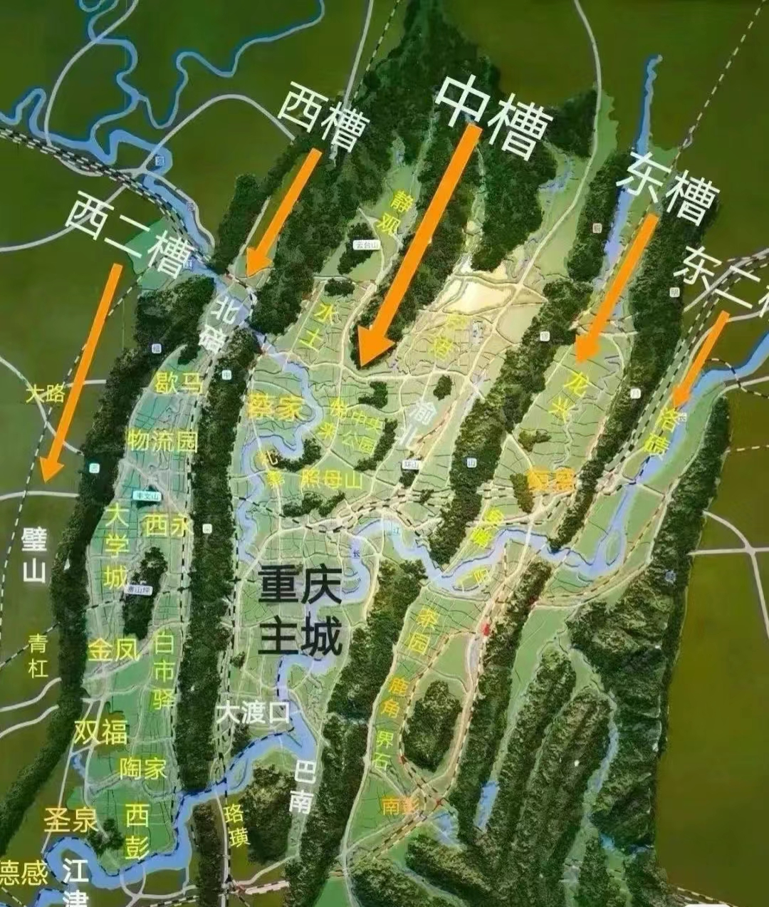
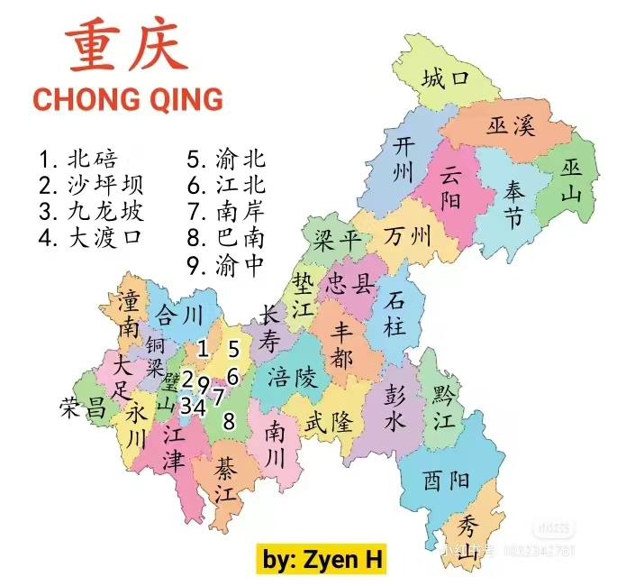

地理环境
重庆地处中国西南部，地理位置优越，自然环境多样，是中华文明的重要发祥地之一。让我们一起探索重庆的地理环境，了解这片土地的自然魅力。
地理位置
重庆市位于中国西南部、长江上游地区,地跨东经105°11'～110°11'、北纬28°10'～32°13'之间 的青藏高原与长江中下游平原的过渡地带。东邻湖北、湖南，南靠贵州，西接四川，北连陕西;辖区东西长470千米,南北宽450千米,幅员面积8.24万平方千米。重庆市地势由南北向长江河谷逐级降低，西北部和中部以丘陵、低山为主，东南部靠大巴山和武陵山两座大山脉，坡地较多，有“山城”之称。总的地势是东南部、东北部高，中部和西部低，由南北向长江河谷逐级降低。


地形地貌
重庆市地貌结构复杂，呈现出四大特点：一是地势起伏大。东部、南部、东南部地势高， 西部地势低。东部最高处为大巴山的川鄂岭，最低处为巫山长江水面。二是地貌类型多样。以山地为主，有中山、低山、高丘陵、中丘陵、低丘陵、缓丘陵、台地和平坝等八大类。三是地貌形态组合的地区分异明显。华蓥山—巴岳山以西为丘陵地貌，华蓥山—方斗山之间为平行岭谷区，北部为大巴山山区，东部、东南部、南部属巫山、大娄山山区。四是喀斯特地貌分布广泛。发育有具特色的喀斯特槽谷景观，典型的有石林、峰林、洼地、残丘、溶洞、暗河、峡谷、天坑地缝等喀斯特景观。
气候特征
重庆市属亚热带季风性湿润气候，年平均气温16~18℃，长江河谷的巴南、綦江、云阳等地达18.5℃以上，东南部的黔江、酉阳等地14~16℃，东北部海拔较高的城口仅13.7℃，最热月份平均气温26~29℃，最冷月平均气温4~8℃，采用候温法可以明显地划分四季。年平均降水量较丰富，大部分地区在1000~1350毫米，降水多集中在5~9月，占全年总降水量的70%左右。重庆市年平均相对湿度多在70%~80%，在中国属高湿区。年日照时数1000~1400小时，日照百分率仅为25%~35%，为中国年日照最少的地区之一，冬、春季日照更少，仅占全年的35%左右。主要气候特点可以概括为：冬暖春早，夏热秋凉，四季分明，无霜期长；空气湿润，降水丰沛；太阳辐射弱，日照时间短；多云雾，少霜雪；光温水同季，立体气候显著，气候资源丰富，气象灾难频繁。重庆市在地形和气候双重作用下，春夏之交夜雨尤甚，因此有"巴山夜雨"之说，有山水园林之风光；多雾，素有“雾重庆”“雾都”之称。年平均雾日是104天，有世界雾都之称的英国伦敦年平均雾日只有94天，远东雾都的日本东京也只有55天。璧山区的云雾山全年雾日多达204天，堪称“世界之最”。
自然灾害
重庆市自然灾害种类主要有干旱、寒潮、阴雨低温、暴雨、冰雹和浓雾等大气圈灾害；滑坡、崩塌和地震等岩石圈灾害；洪涝、水土流失等水圈灾害，洪涝灾害有过境洪水型、本地暴雨型和混合型三种，多发生于降雨集中的4—10月。 [157] 2022年9月20日，根据气象干旱监测，重庆等地仍然存在中度至重度气象干旱。
让我们一起探索山城重庆吧!